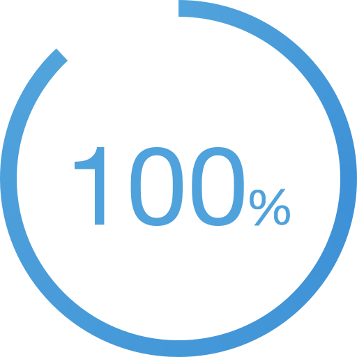
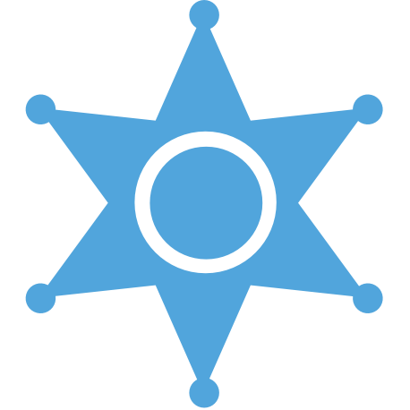
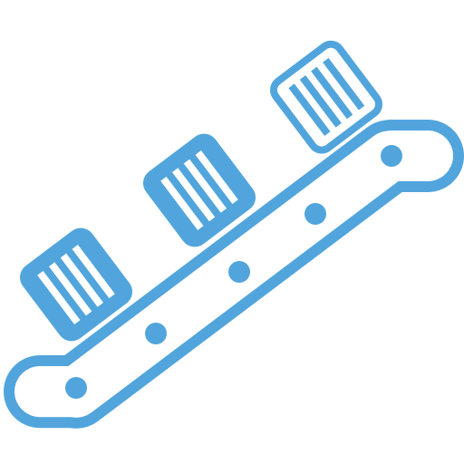

弹性的云生产环境——支持业务无限增长
数人云操作系统可以管理任意规模的应用。不管是10还是10000台服务器，数人云都可以在整个集群轻松实现弹性扩展。从而轻松应对业务的爆发式增长。
数人云是通过将应用层与资源层解耦，动态调度和分配资源来实现整个集群的弹性缩放功能。
- 应用层弹性
- 1. 将应用部署在负载均衡器后，根据实时的需求变化，自动调整应用实例数量。
- 2. 一键部署应用实例到整个集群。只需要几分钟或几秒钟。
- 资源层弹性
- 当你的业务增长或有新业务要上线时，我们可以很容易的将新的资源添加到整个集群资源池中。
- 扩展计算资源
- 将数人云节点安装到新的服务器或虚拟机，并连上网络。数人云会自动发现这些新的资源，并将其添加到整个集群中。
- 一键部署应用实例到整个集群。只需要几分钟或几秒钟。
- 自动弹性缩放
- 数人云可以通过云服务商的API接口按需自动扩展或收缩集群规模，以应对爆发式增长。

高可用——服务器会宕机，但业务不会掉线
当您开启高可用服务后，数人云会自动为宕机服务器上运行的节点重新分配资源，保障业务不掉线，高可靠运行。
这也就意味着您不用再为一两台服务器的宕机，而经历一个不眠之夜。

提升资源利用率
传统的数据中心或云的资源利用率只有12-15%。数人云可以将不同应用自动混合部署到整个集群，不受单个服务器边界限制，明显提升了资源利用率。平均可提升400%。

易部署 —— 一次开发，到处运行
数人云使用Docker容器技术封装应用。通过将应用，依赖关系，配置信息打包在一起，Docker封装的应用拥有了极高的可移植性。这样就使得用户不需要重写代码，就可以在公有云，私有云或混合云上部署和管理应用。
此外，无论集群大小，对于您而言其逻辑上是一台机器，应用的部署、运行和监控如同在单机进行。可以方便开发者进行持续交付，推进产品迅速迭代优化。使用数人云后，应用迭代更新的速度可以提高7倍以上。
易使用
数人云拥有极高的易用性。在此之前，管理分布式应用，或监控数十台，上千台服务器的运行情况是一件很困难的事情。数人云强大的命令行工具和控制面板，让这一切都变得容易起来。